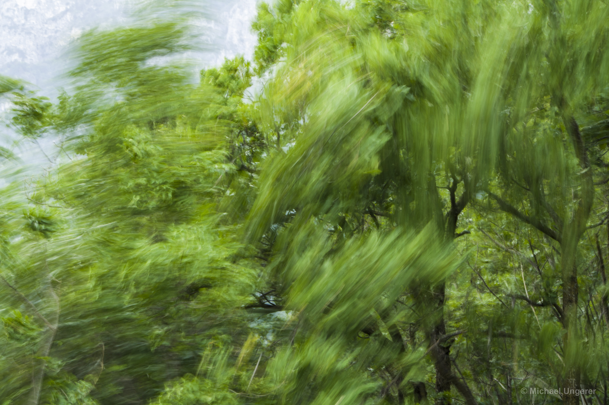
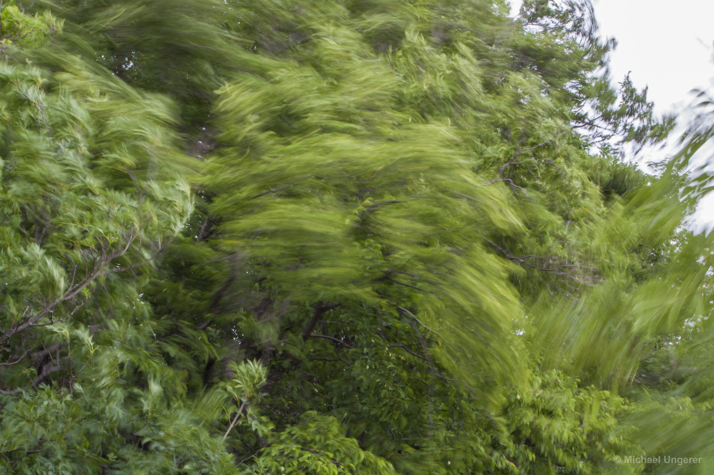
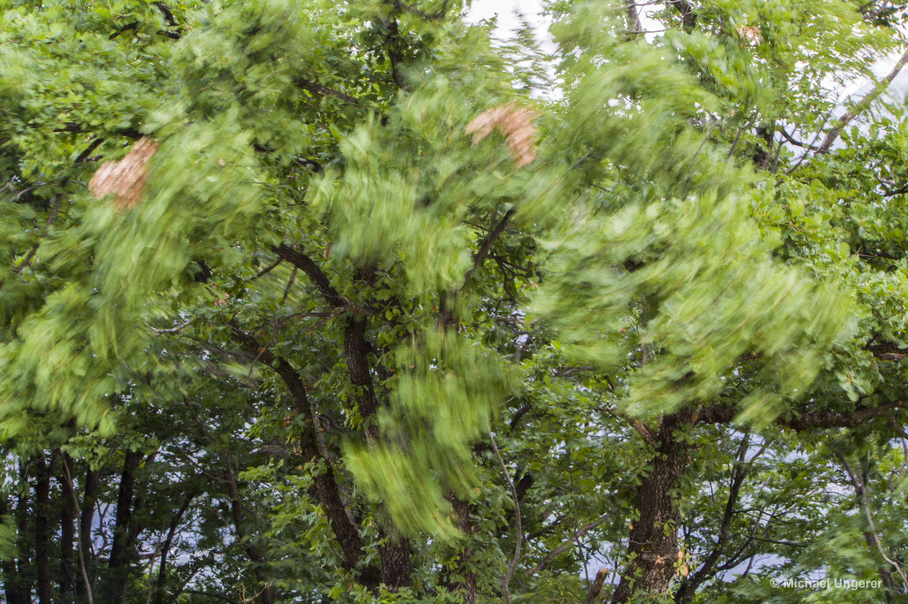
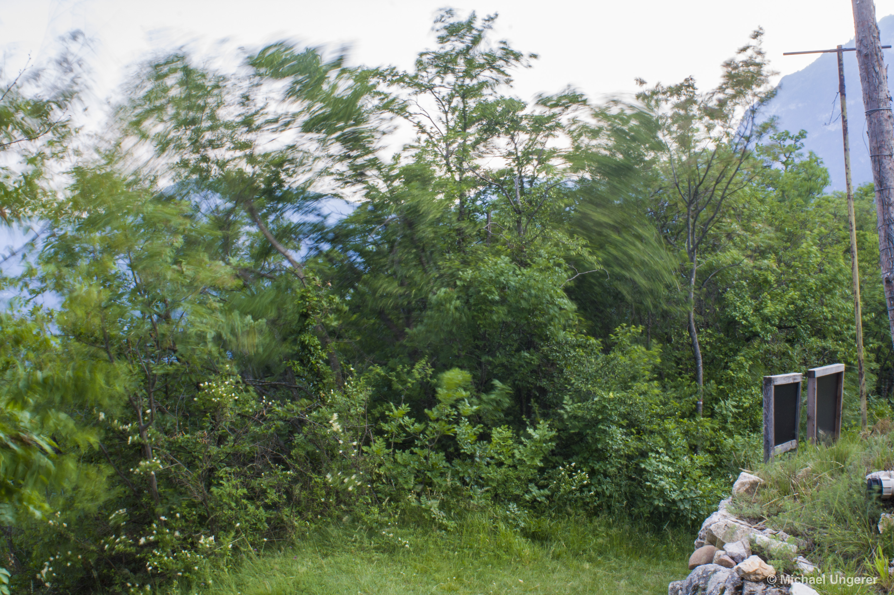
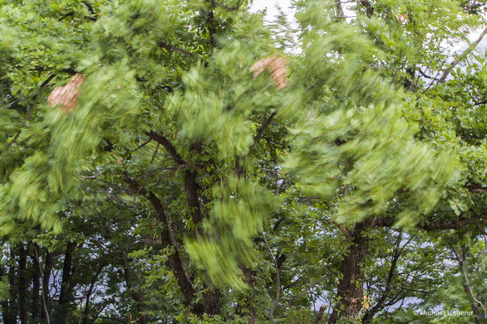
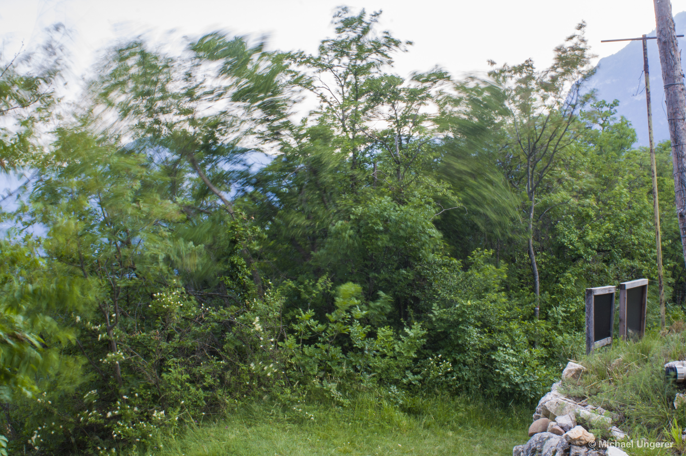
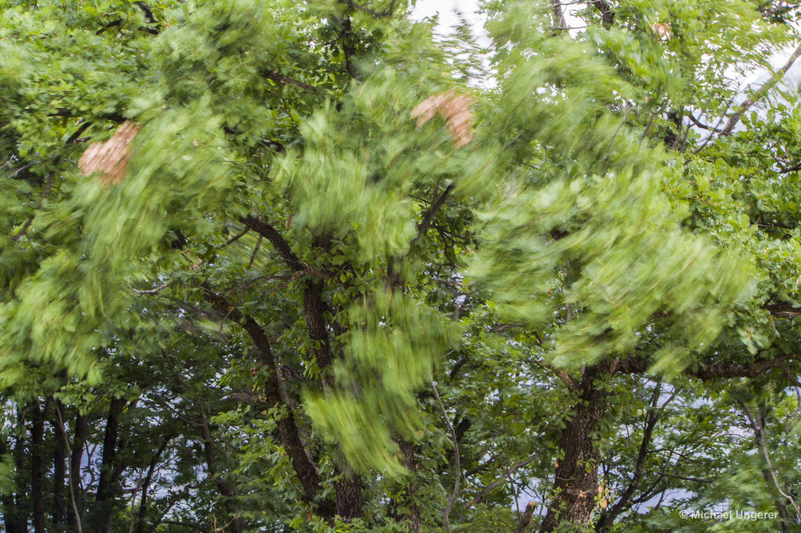
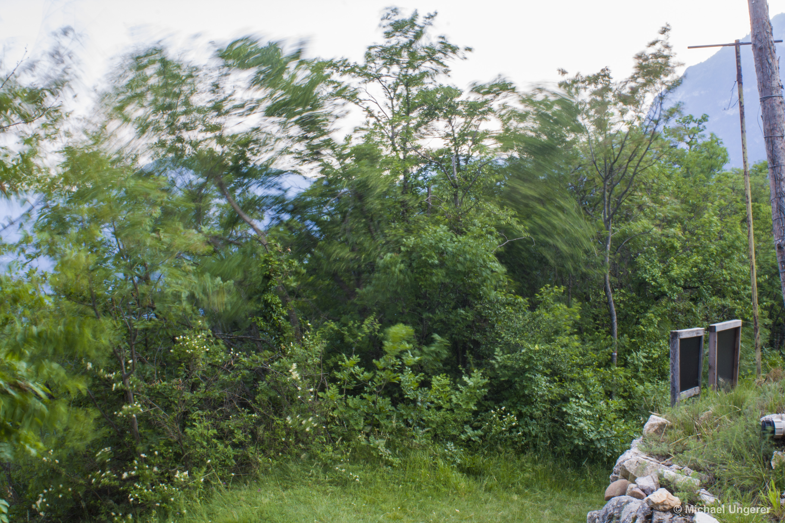

 





Green Rush, 2021 - ongoing
An atmosphere of restlessness pervades these photographs in an almost violent way. The wind shaking the leaves and branches of the trees disturbs our usual idea of trees as immobile beings and symbols of peace and tranquillity. The blurred areas in the photos have a resemblance to brush strokes, giving the images an irritating look, as if photography and painting have been fused into a kind of hybrid image.